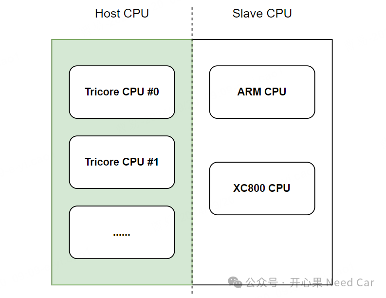
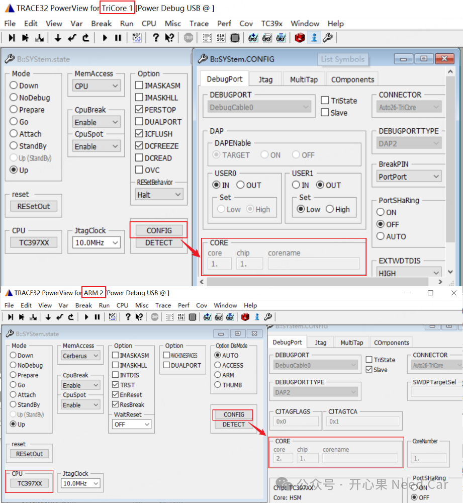

开心果 Need Car · 2024-09-21T08:23:00+08:00 · 微信原文


（一）HSM Core对应的Lauterbach脚本配置
加载HSM工程代码符号，对应脚本如下：
;Initialize，芯片芯片设置，本例：TC397XXTC397XX;Core设置CORE 2. 1.SYStem.UpSYStem.ResetTargetWinPAGE.RESetP000WinCLEARWinPOS 0.28571 0.25 115. 53. 16. 1. W000WinTABS 10. 10. 25.List.AutoWinPOS 200.29 1.0833 50. 19. 0. 0. W001register.view2;需要加载的镜像文件，本例只加载符号data.load.elf ../vHsm.elf /nocoderegister.view
提示：Host和HSM代码的烧录可以在主核的脚本中完成，烧录主要使用加载命令，本文不赘述。往期精彩回顾